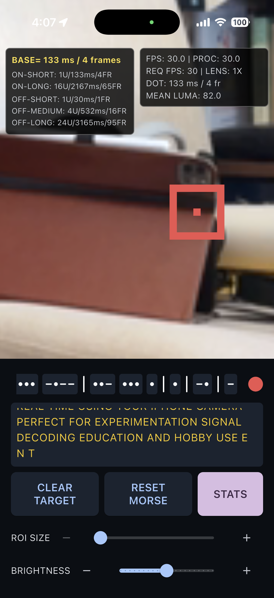

Tap flashing light
Start by tapping the flashing light source you want to track so Morse Watcher can focus on the correct target.
Optical Morse Detection
Morse Watcher helps you detect and decode Morse code from flashing lights using your iPhone camera.
iOS App Store release is planned next, but the app is not yet approved for public download.
App Introduction
Start by tapping the flashing light source you want to track so Morse Watcher can focus on the correct target.
After selection, the app automatically calibrates the region of interest and signal settings before decoding.
Decoded Morse symbols, message output, and timing feedback then appear in the live interface.
Workflow
01
Present the incoming optical signal in a way that separates noise from actual timing changes.
02
Convert pulse duration into dots, dashes, and readable decoded output without burying the operator in controls.
03
Surface the message and signal health quickly enough for field use, demos, or product storytelling.
Capabilities
Morse Watcher is designed for practical light-signal decoding and experimentation. For best results, use a clear, high-contrast blinking light source and stable camera positioning.
The interface keeps on/off state, Morse symbols, converted text, and base pulse timing visible at the same time so you can interpret the signal without digging through controls.
App Summary
MORSE WATCHER HELPS YOU DETECT
AND DECODE MORSE CODE FROM
FLASHING LIGHTS USING YOUR
IPHONE CAMERA.Contact
For support, release questions, or early interest, contact support@morsewatcher.com.